Teil 2 · Didaktik 2.2 · Generation a3ce3d7f1e8f82b2

In der Sternwarte werden aus derselben Darstellung drei Zahlenreihen geprägt: Q, K und V. Q wird mit erlaubten früheren Keys verglichen. Mira sperrt die Zukunft; Sofi verwandelt die verbleibenden Scores in Anteile. Diese Anteile gewichten Valos Inhalte. Die Kämme zeigen eine graduelle Zahlenpassung. Sie klicken nicht als Beweis für Verständnis zusammen. Der Inhalt der Mischung kommt aus V, während K dem Vergleich dient.
Rechne Skalarprodukt, Skalierung, Maske und Softmax in dieser Reihenfolge. Berechne die gewichtete V-Summe und vergleiche den Aufwand verschiedener Folgenlängen.
Scores sind noch keine Wahrscheinlichkeiten. Erst Softmax normalisiert die erlaubten Werte. Die Ausgabe ist eine gewichtete Summe von V-Vektoren. Bei doppelter Folgenlänge wächst der Paarvergleichsaufwand ungefähr auf das Vierfache; auch ein großer Kontext kostet Rechnung.
Prüfe Maske und Summe der Anteile. Verwechsle Keys nicht mit Values und hohe Aufmerksamkeit nicht mit Wichtigkeit oder Wahrheit. Die Blindprobe muss ohne Wortschilder dieselben Zahlen ergeben.